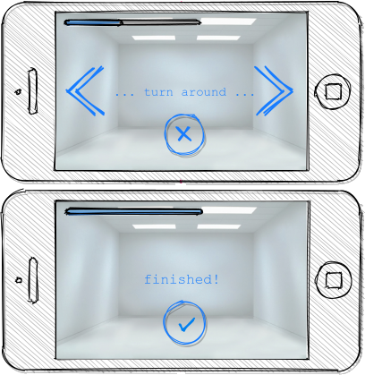

Interior Designer App
Asım Oğuz, Dominik Pegler, Sophia Pum
HCI — Moodle — jitsi
Inhaltsverzeichnis
Termine
DONE M1: Problemanalyse
DONE M1: Präsentation Dominik Sophia Asim
DONE M2: Low-fidelity Prototypen
DONE M3: Zwischenbericht VideoCall
TODO M3: Erstellung der App
- TODO Konzept
[2/3]Dominik
[X]Grobkonzept: Screens, Funktionen des Prototypen definieren[X]Funktionen/Simulationen festlegen[ ]Konzept an die Programmierergebnisse anpassen
- TODO App programmieren
[5/6]Dominik Asim Sophia
[X]App mit Basis-HomeScreen erstellen[X]Restliche Screens aus Konzept implementieren (nur grobes Design)[X]Navigation implementieren[X]Screens anpassen and Personas, einheitlicher Style[X]Kernfunktionen einbauen (bzw. mocken)[ ]Kompilieren
- TODO Design-Entscheidungen Dominik
WAIT Abschlussgespräch
Team
| Asım Oğuz | Dominik Pegler | Sophia Pum | |
|---|---|---|---|
| Studium | Informatik | Psychologie | Informatik |
| Semester | 4. Sem. Bachelor | Letztes Sem. Bachelor | 4. Sem. Bachelor |
| Programmiererfahrung | Java, JS, C#, C++ | Python, Julia | Java, C++ |
| Interessen | Design | Problemlösen | Design |
Projektbeschreibung
Problemstellung:
Stellen Sie sich vor, Sie wollen ihre Wohnsituation verändern, Sie ziehen in eine neue Wohnung oder Sie planen sogar ein Haus zu bauen. Um sich inspirieren zu lassen, durchforsten Sie einschlägige Fachmagazine: Welcher Einrichtungsstil, welche Möbel würde meinen Vorstellungen entsprechen?
Ein Problem hierbei ist, zu verstehen, welche Gestaltungsmöglichkeiten der jeweilige Raum bietet und wie Möbel sinnvoll angeordnet werden sollten. Im Regelfall werden hierzu eine Vielzahl an Scribbles und Handskizzen gezeichnet. Auf diesen Vorgang sind Innenarchitekten und Designer spezialisiert. Ein gern verwendetes Hilfsmittel sind Zeichenvorlagen und Skizzenlineale, welche Basismaße für Möbel und anderer einrichtungsrelevanter Darstellungen beinhalten.
Dieses Projekt soll eine Raumplanungs-App erstellen, welche diese Vorgänge auch Laien zugänglich macht. Zum Besprechen beim Café, zum schnellen Visualisieren von Raumlösungen und zum Auswählen verschiedener Einrichtungsstile (e.g. minimal / rustikal / gemütlich).
- Aufgabenstellung und Ziele:
- Machen Sie Interviews mit potentiellen Nutzer*innen als Requirementanalyse
- Basierend auf dieser Datenerhebung überlegen Sie sich mehrere Zielgruppen und deren spezifische Anforderungen (e.g. Personas)
- Erstellen Sie einen Prototypen der es
- ermöglicht Skizzen leicht und schnell veränderbar nachzubilden und
- Empfehlungen für bestimmte Stile / Raumgrößen / andere Kategorien zur Verfügung stellt
- Evaluieren Sie die App mit Nutzer*innen
Meilenstein M1
Literaturrecherche
Autor: Dominik PEGLER
Automated interior design using a genetic algorithm (Kán & Kaufmann, 2017)
Kán und Kaufmann von der TU Wien stellen in dieser Arbeit aus dem Bereich des Automated Interior Design ein Verfahren vor, das auf Basis von vorgegebenen Informationen wie Raumgröße in der Lage ist, virtuelle Räume automatisch und selbstständig mit Möbeln und Einrichtungsgegenständen zu befüllen.
Dabei werden deren jeweilige Position und Ausrichtung im Raum so gestaltet, dass sie ästhetischen, ergonomischen und funkionellen Anforderungen optimal Rechnung tragen. Diese Anforderungen nennen sich Interior Design Guidelines.
Sie wurden für dieses Verfahren in mathematische Ausdrücke übersetzt und in eine Kostenfunktion integriert. Mittels eines Genetischen Algorithmus (GA) wird diese Kostenfunktion auf ein Minimum optimiert. Zusätzlich eweitert dieses Verfahren auch die Optimierung auf den transdimensionalen Raum: dadurch wird die automatische Auswahl von Gegenständen möglich. Ebenfalls optimiert wird die Zuordnung von Materialien zu den Möbeln und Einrichtungsgegenständen, um ein einheitliches Design und eine harmonische Farbgestaltung zu erreichen.
In einer Wahrnehmungsstudie wurde festgestellt, dass dieses Verfahren tatsächlich in der Lage ist, lebenswerte und sinnhafte Innenarchitekturen zu generieren. Im Vergleich zu von professionellen Designern generierten Layouts schnitten die automatisch generierten Layouts gut ab, wobei Küchen deutlich besser und Schlafzimmer deutlich schlechter bewertet wurden als jene der professionellen Innenarchitekten.
Augmented reality uses in interior design (Sandu, M., & Scarlat, I. S., 2018)
Weil Möbel zunehmend über Online-Shops gekauft werden und sich viele Kunden in der Folge nicht vorstellen können, wie neue Möbelstücke in ihrem Zuhause aussehen würden, lösen viele Unternehmen dies mit dem Einsatz von Augmented Reality (AR) in ihren Applikationen.
AR-Anwendungen sind in der Lage, die virtuellen Möbel auf dem Anwendungsbildschirm in eine physische Umgebung einzubetten, virtuelle Markierungen im Raum zu machen und über diese Größe und Größenverhältnisse im Koordinatensystem des Raums zu ermitteln. Der Benutzer kann also virtuelle Möbel auf dem Bildschirm auswählen und an einer beliebigen Stelle im Raum platzieren. Wesentlicher Bestandteil bei AR-Anwendungen ist dabei die Kamera des Smartphones.
In dieser Arbeit werden verschiedene AR-Anwendungen für Interior Design analysiert, dabei Vor- und Nachteile erhoben und in Folge eine AR-Anwendung vorgeschlagen, die die meisten aktuellen Probleme der Innenraumgestaltung löst.
Als Software-Frameworks für Augmented Reality wird ArToolKit vorgestellt, ein vielfach verwendetess und minimales Open-Source-Framework. Das ARToolKit-Tracking funktioniert wie folgt:
- Kamera nimmt Videos der realen Welt auf und sendet ans Programm
- Programm durchsucht alle quadratischen Formen in den Videos
- Wird ein Quadrat gefunden, errechnet die Software die Position der Kamera relativ zum schwarzen Quadrat.
- Sobald die Position der Kamera bekannt ist, wird das Modell aus dieser Perspektive gerendert.
- Modell wird auf dem Video der realen Welt gezeichnet (auf einer quadratischen Markierung).
- Das fertige Bild wird am Display angezeigt, auf dem virtuelle Gegenstände über die reale Welt gelagert sind.
Als App, die auf AR-Technologien aufbaut, wird IKEA place application genannt. Sie soll helfen, den Entscheidungsprozess beim Kauf von Einrichtungsgegenständen zu erleichtern. Bei ihr liegen die Fehlerbereich bei wenigen Zentimetern. Die App ist auch in der Lage, physische Objekte im Raum zu erkennen und etwas Ähnliches aus dem Online-Shop vorzuschlagen. Als Nachteil der IKEA-place-app wird genannt, dass Objekte manchmal völlig inkorrekt oder in inkorrekter Größe platziert. Ein weiterer Nachteil ist, dass nur Gegenstände aus dem IKEA-eigenen Store ausgewählt werden können.
Eine weitere Applikation ist die Houzz-App. Im Gegensatz zur IKEA-App kann diese App besser flache Oberflächen erkennen, was die genannten groben Fehler verringern kann. Obwohl auch diese App nicht ohne Nachteile auskommt (Freezing, uneinheitliches Cross-Device-Verhalten), ist sie einer von den Autoren gestarteten Umfrage zufolge beliebter als die App von IKEA. Das wird vor allem auf das Design zurückgeführt.
Als eine den Autoren nach sehr gute Lösung wird auch noch die App Homerstyler Interior Design genannt. Diese erlaubt auch Größenänderungen der Objekte in Echtzeit, vordefinierte leere Räume zu wählen und diese nach Belieben zu gestalten. Einziger Nachteil dieser App ist der Umstand, dass kein kompletter Raum-Scan möglich ist und nach der Umfrage ist sie wenig populär und liegt hinter jener von IKEA.
Der Lösungsvorschlag der Autoren wäre eine App, die die Möglichkeit bietet, nach dem Scan der Umgebung bestimmte Objekte oder alle Objekte entfernen zu können. Damit lässt sich ein Raum leichter oder von Grund auf neu gestalten. Es wäre auch eine Neuheit, da diese Funktion zum Zeitpunkt des Artikels in keiner Smartphone-Anwendung verfügbar war. Die Autoren schildern am Ende auch noch kurz, wie ein Algorithmus dafür aussehen könnte.
Inter AR: Interior decor app using augmented reality technology (Moares, R., Jadhav, V., Bagul, R., Jacbo, R., Rajguru, S., & K, R., 2020)
In diesem Artikel beschreiben die Autoren die Vorgänge, die in AR-basierten Interior-Design-Applikationen stattfinden. Ausgangspunkt sind hier zwei Algorithmen, die die reale Umgebung erfassen: der sogenannte Harris-und-Stephens-Ecken-Detektor-Algorithmus und der SLAM-Algorithmus (surface localization and mapping) zur Erfassung der Oberflächen.
Die Autoren nennen weiters fünf häufig verwendete Methoden von AR:
Markerbasierte AR (marker-based AR)
Verwendet visuelle Marker wie QR/2D-Codes oder NFT-Marker (tatsächliche Gegenstände). Nach der Markererkennung und der Kalkulation der Position und Ausrichtung wird der virtuelle Gegenstand platziert.
Ortsbasierte AR (location-based AR)
Diese Form der AR ist weit verbreitet und verwendet anstelle von Markern die im Gerät verbauten Sensoren zur Bestimmung der Position.
Projektionsbasierte AR (projection-based AR)
In diesem Verfahren wir Licht vom Gerät auf die Umgebung geworfen. Die Ergebnisse lassen Rückschlüsse über Position, Ausrichtung und Tiefe von Objekten zu.
Outlining AR
Diese Methode funktioniert mittels spezieller Kameras, die es ermöglichen Aufnahmen der Umgebung bei schlechten Lichtverhältnissen zu machen. Diese Methode hat Ähnlichkeit mit der projektionsbasierten AR und kommt in Parkassistenten von Autos zur Anwendung.
Überlagerungs-AR (superimposition-base AR)
Teilweise oder sogar vollständige Ersetzung der realen Umgebung eines Objekts durch eine virtuelle Umgebung desselben Objekts.
Im Rahmen dieses Artikels wurde eine AR-Applikation mittels markerloser AR erstellt. Für die 3D-Modelle wurde das Google Cardboard SDK verwendet.
Dabei wurden folgende Einschränkungen genannt: (1) Nicht alle Android-Geräte unterstützen AR-Technologien vollständig. Es gibt zwar Workarounds, doch sind diese nicht immer präzise. (2) Möbelobjekte werden aus dem Backend importiert und lokal gespeichert. Aufgrunddessen gibt es keine Photogrammetrie, mit der die Anwendung das Bild in ein 3D-Objekt konvertieren kann. (3) Die Anwendung erlaubt aufgrund der begrentenz Funktionen der Google Entwicklertools keine Platzierung von zwei oder mehr Objektinstanzen auf einer einzelnen Oberfläche.
Nichtsdestotrotz zeigte das Projekt, dass der Benutzer die virtuellen Möbel nach den eigenen Vorstellungen anpassen und in der realen Welt arrangieren kann. Über die Smartphone-Kamera kann der Benutzer die Oberflächen erkennen, die Möbel über die App auswählen und nach Wunsch auf dem Bildschirm platzieren. Eine Verknüpfung mit AI könnte für verschiedene Zwecke in Zukunft eine Rolle spielen.
Die Arbeit soll helfen, Menschen die Möglichkeit zu geben, selbst Designer zu sein und ihr Zuhause nach eigenen Vorstellungen zu gestalten. Ein solches System hat den Autoren nach viele Vorteile, weil dadurch auch bereits bekannte Limitationen von Möbelhäusern wie z.B. begrenze Auswahl an lagernden Möbelstücken an Gewicht verlieren.
Quellen
- Kán, P. & Kaufmann, H. (2017). Automated interior design using a genetic algorithm. Proceedings of the 23rd ACM Symposium on Virtual Reality Software and Technology, 1– 10. https://doi.org/10.1145/3139131.3139135
- Moares, R., Jadhav, V., Bagul, R., Jacbo, R., Rajguru, S., & K, R., Inter AR: Interior decor app using augmented reality technology (2020). Social Science Research Network. https://papers.ssrn.com/abstract=3513248
- Sandu, M., & Scarlat, I. S. (2018). Augmented reality uses in interior design. Informatica Economica, 22(3/2018), 5-13. http://dx.doi.org/10.12948/issn14531305/22.3.2018.01
Konkurrenzprodukte
Autorin: Sophia PUM
Die wahrscheinlich bekannteste Interior-Design-App auf dem Markt ist Houzz (Abb. 2). Mit Millionen von qualitativen Bildern von Badezimmern, Wohnzimmern, Küchen, Möbeln und wo weiter bietet sie den Nutzenden viel Inspiration und die Möglichkeit sich einen Eindruck von verschiedenen Einrichtungen und Farbkombinationen zu schaffen. Praktisch ist die Funktion, dass man sich eigene persönliche Entwürfe speichern kann. Außerdem kann man sich auch mit einer User-Community austauschen und gegenseitig inspirieren.
Der größte Vorteil der App ist die große Menge an Bildern von Gestaltungsmöglichkeiten in verschiedenen Stilen, die sie beinhaltet. Nutzer verwenden Sie vor allem um sich Inspiration zu holen.
Ein Nachteil ist, dass sich die App Großteiles auf die Einrichtung von Häuser und Hausbau spezialisiert. Obwohl sie angibt für alle Wohnungen geeignet zu sein, findet man auf den Fotos auch hauptsächlich große, helle Räume. Das ist vor allem für junge Leute, die oft in kleinen Wohnungen oder WG-Zimmern wohnen unpraktisch.
Generell ist die App nicht wirklich auf junge Leute ausgerichtet und könnte sich in der Hinsicht verbessern. Denn diese nutzen oft schon bekannte Apps wie Instagram oder Pinterest zur Inspiration. Für sie hat es dann wenig Sinn eine zusätzliche App herunterzuladen, die nicht einmal ihre Wünsche abdeckt. Das ist meiner Meinung nach definitiv ein Nachteil, denn gerade Anfang 20 ziehen viele Menschen um und wären potentielle Nutzerinnen und Nutzer einer Einrichtungs-App.

Abbildung 2: Houzz App
Ikea Place ist die Einrichtungs-App vom Möbelhaus Ikea (Abb. 3). Mithilfe einer Augumented-Reality-Technologie kann man sehen wie die Ikea-Produkte in den eigenen Räumlichkeiten aussehen würden. Die Gegenstände werden dreidimensional und maßstabsgetreu nachgestellt. Zusätzlich gibt die App auch Tipps zur Einrichtung. Das Ziel der App ist es, dass sich jeder von zuhause aus einen besseren Eindruck von den Möbeln machen kann.
Der größte Vorteil der App, ist meiner Meinung nach, dass alle Funktionen und Produkte von Ikea ist. Man kann sich die Möbel von zuhause aus ansehen und hat durch die moderne Technologie einen guten Einblick drauf, wie sie in die Wohnung passen würden. Im Ikea-Onlineshop kann man die Produkte im Anschluss sofort bestellen und sich liefern lassen. So erfolgt das Einrichten rasch und unkompliziert.
Allerdings hat Ikea hauptsächlich Möbel im modernen-skandinavischen Stil und Nutzende haben nicht die Möglichkeit verschiedene Gestaltungsarten auszuprobieren. Außerdem kann man nur eine beschränkte Anzahl der Ikea-Produkte in der Ikea Place App verwenden.

Abbildung 3: Ikea Place App
Auch bei Homestyler Interior Design & Deko-Ideen (Abb. 4) kann man Fotos von seinen Räumlichkeiten in die App laden und mit einer großen Menge an Farben, Materialien und Möbel bearbeiten und umgestalten. Sie bietet eine gute Einsicht darauf, wie sich gewisse Änderungen im Raum machen würden. Auch hier gibt es eine User-Community zum Austausch von Ideen und Entwürfen.
Die App bietet viele Gestaltungsmöglichkeiten und ist einfach zu handhaben. Sie enthält 3D-Modellen von Möbeln verschiedener Marken, und bietet so die Möglichkeit viele verschiedene Stile auszuprobieren
Ein Feature an dem es der App aber fehlt, ist die Möglichkeit einen leeren Raum zu erstellen um seine Ideen komplett neu zu entfalten.

Abbildung 4: Homestyler App
Nutzer- & Kontextanalyse
Nutzeranalyse
Autor: Dominik PEGLER
- Aufgaben der Nutzer
- Schnelles und unkompliziertes Skizzieren von Innenarchitekturen
- Schnelle und unkomplizierte Visualisierung der gestalteten Innenarchitekturen
- Die eigenen Vorstellungen anderen Personen einfach und anschaulich zu kommunizieren
- Ziele der Nutzer
- Zeit- und Kostenersparnis, weil keine Beratung durch Innenarchitekt*in nötig ist und die App an Ort und Stelle hilfreich ist
- Konkretere Vorstellungen zu entwickeln
- Bessere und nachhaltigere Entscheidungen zu treffen
- Potenzielle Probleme mit dem System
- Die User fühlen sich von der App nicht angesprochen.
- Die Funktionalitäten oder Auswahlmöglichkeiten sind zu eingeschränkt, z.B. gibt es nur eine bestimmte Art von Möbeln oder Objekten, die über die App darstellbar sind, oder es gibt technische Limitationen mehre virtuelle Objekte gleichzeitig darzustellen.
- Die User sehen den Nutzen nicht (wegen Art des Aufbaus der App nicht klar ersichtlich)
- App bringt keinen Zusatznutzen zu bereits vorhandenen Tools
- User können Aufbau und Logik des Programms nicht nachvollziehen
- Zu lange Ladezeiten (bei mobilen Apps noch wichtiger als bei Webapps!)
- Freezing oder Absturz der App
- Smartphone genügt den Anforderungen nicht
- Userpfade:
Wie können User die App downloaden?
Über den jeweiligen Appstore oder über einen Link, der von einer dritten Person zugesendet wird.
Welche Hilfestellungen werden mit der App mitgeliefert?
Eigener Menüpunkt, der zu einer mobilen Hilfeseite mit Problem-Kategorien und einer Suchfunktion führt.
Wie sieht die Erstbenutzung aus?
Es sind keinerlei Registrierungen notwendig. Die Nutzer gelangen sofort in ein Menü, in dem sie die gewünschte Aktion auswählen können. Es sollte möglich sein, bereits 5 Bildschirmberührungen ein Ergebnis zu bekommen. Zum Beispiel mittels Defaulteinstellungen.
Was sind die Anreize, die App wiederzuverwenden?
Gute Ersterfahrungen sind der wichtigste Grund, die App wiederzuverwenden. Die Ersterfahrung muss bereits den Nutzen der App demonstrieren und zu einem Erfolgserlebnis führen.
- Nutzergruppen
Die User teilen sich auf viele große Gruppen auf, da es sich beim Thema Wohnen um etwas handelt, das jeden von uns betrifft und die meisten Menschen in der Lage sind, ihre Wohnsituation selbst zu gestalten. Aus diesem Grund sind Kinder und Jugendliche unter 15 Jahren sind mit großer Wahrscheinlich weniger stark vertreten, ebenso sehr alte Personen und Personen mit starken neurobiologischen Beeinträchtigungen.
- Kategorienbildung nach Alter und Fachwissen
Vorteil: Alter und Expertise hängen stark mit der Art der Nutzung von Smartphones (Phänomen aus den letzten 15 Jahren) und speziellen Tools zusammen. Alter ist einfacher zu erfassen als Smartphone literacy.
ID Nutzergruppe J Jüngere Menschen (15–35 Jahre) ohne professionellen Background im Bereich Innenarchitektur M Menschen im mittleren Alter (36–60 Jahre) ohne professionellen Background A Ältere Menschen (60–80 Jahre) ohne professionellen Background JM+ Menschen im jungen oder mittleren Alter mit professionellem Background A+ Ältere Menschen mit professionellem Background - Mögliche andere Kategorienbildung
- Bildung
- Einkommen
- Smartphone/Computer literacy
- Kategorienbildung nach Alter und Fachwissen
Kontextanalyse
- Benutzer hat keine Vorstellung von möglichen innenarchitektonischen Designs
- Benutzer hat keine professionellen Kenntnisse und keine Tools zur Veranschaulichung zur Hand
- Benutzer hat auch sonst keine ergänzenden Hilfsmittel wie Zeichenstifte und Papier zur Hand
- Benutzer besitzt ein Smartphone auf dem aktuellen Stand der Technik
- Bedarf zur Verwendung der App
- entsteht außerhalb von professionellen Settings
- kann fast an jedem Ort und Situation entstehen
Personas
Primäre Persona #1
Autor: Asım OĞUZ

Abbildung 5: "Tobias Ebner"
- Name: Tobias Ebner
- Typ: Idealist
- Credo: Mit minimalem Aufwand maximalen Erfolg erreichen
Background:
Tobias Ebner, der 25 Jahre alt ist, hat vor kurzem seine Ausbildung abgeschlossen und arbeitet nun als Vollzeit Grafik Designer. Da er jetzt ein höheres Budget zur Verfügung hat will er aus der WG ausziehen und zum ersten mal in seinem Leben alleine leben. Wie sein Job es auch vermuten lässt mag Tobias Ebner gut durchdachte Designs, daher ist es ihm auch wichtig vor dem Umzug alles so gut wie möglich durch zu planen. Tobias Ebner erleichtert sich immer die Arbeit in dem er sich nützliche Tools findet.
- Abneigung: Zeitverlust
- Männlich, 25 Jahre
- Nationalität: Österreich
- Familienstand: Single
- Beruf: Grafik-Designer
- Berufserfahrung: 1 Jahr
- Einkommen: EUR 30.000 / Jahr
- Nutzung mobiler Geräte: 8h / Tag
- Verwendete Technologien: Android Smartphone, iPad, Windows-Laptop, Windows-Desktop-PC
Primäre Persona #2
Autorin: Sophia PUM
Abbildung 6: "Carina Winkler"
- Name: Carina Winkler
- Typ: Rational
Background:
Carina Winkler ist 32 Jahre alt, verheiratet und arbeitet als Ärztin in einer Arztpraxis in Wien. Nun möchte sie ihren Traum verwirklichen und gemeinsam mit ihrem Mann eine eigene Arztpraxis eröffnen. Außerdem wollten sie und ihr Ehemann schon lange aus ihrer kleinen Wohnung in der Wiener Innenstadt ausziehen und in ein Haus außerhalb der Stadt ziehen. Ihr Plan ist es, ein Haus mit Arztpraxis und privatem Wohnbereich einzurichten. Da beide beruflich viel zu tun haben und sich zusätzlich nicht zu viel mit dem Umzug stressen wollen, freuen sie sich über jede Art von Unterstützung. Ihr Wunsch ist ein Umzug der unkompliziert sowie stressfrei verläuft, aber trotzdem ihre Wohnträume erfüllt. Sie ist bereit, sich Zeit zu nehmen und den Umzug inklusive der Einrichtung gut zu planen, damit es zu keinen unüberlegten Entscheidungen kommt und sie mit dem Endergebnis langfristig zufrieden ist. Carina ist offen dafür Neues auszurobieren, solange es zu einer effizienteren Problemlösung beiträgt und keine zusätzlichen Schwierigkeiten bedeutet.
- Ziele:
- Ein unkomplizierter, effizienter Umzug
- Eine Einrichtung, die langfristig gefällt
- Neues ausprobieren, ohne viel zu riskieren
- Motivation:
- Übersichtlich organisierte Pläne
- Praktische Herangehensweise
- Abneigung:
- Strukturlosigkeit
- Unüberlegte und hektische Entscheidungen
- Weiblich, 32 Jahre
- Nationalität: Österreich
- Familienstand: Verheiratet
- Beruf: Ärztin
- Berufserfahrung: nicht bekannt
- Einkommen: EUR 60.000 / Jahr
- Nutzung mobiler Geräte: nicht bekannt
- Verwendete Technologien: iPhone, iPad, Windows-Laptop, Windows-Desktop-PC
Sekundäre Persona:
Autorin: Sophia PUM
Abbildung 7: "Felix Schuster"
- Name: Felix Schuster
- Typ: Rational
Background:
Felix Schuster ist 20 Jahre alt und zum Studieren nach Wien gezogen. Er hat ein günstiges WG-Zimmer im Internet gefunden und zieht das erste Mal von zuhause weg. Felix ist extravertiert und viel unterwegs, entweder zum Lernen auf der Bibliothek oder er unternimmt etwas mit Freunden. Sein Wohnraum dient hauptsächlich zum Schlafen und er ist selten zuhause. Er möchte sich sein Zimmer schön einrichten und sich darin wohlfühlen, allerdings hat es für ihn keinen hohen Stellenwert und dient auch nicht zur Selbstverwirklichung. Er möchte flexibel bleiben und wird voraussichtlich nur für ein paar Jahre dort wohnen, somit will er nicht zu viel Zeit oder Geld mit der Gestaltung seines Zimmers verschwenden. Grundsätzlich ist er aber ein offener und moderner Typ und probiert auch gerne Neues aus, allerdings mag er es gerne unkompliziert und bequem.
- Ziele:
- Ein unaufwändiger Umzug
- Eine minimalistische Einrichtung, die das Nötigste abdeckt
- Neues ausprobieren, ohne zu viel zu riskieren
- Motivation:
- Interessiert an modernen Trends
- Bequeme Herangehensart
- Spontane Entscheidungen
- Abneigung:
- Strenge Pläne und Vorschriften
- Eingeschränkte Möglichkeiten
- Männlich, 20 Jahre
- Nationalität: Österreich
- Familienstand: Single
- Beruf: Student
- Berufserfahrung: nicht bekannt
- Einkommen: -
- Nutzung mobiler Geräte: nicht bekannt
- Verwendete Technologien: Android Smartphone, Windows-Laptop
Negative Persona
Autor: Asım OĞUZ

Abbildung 8: "Sabine Gruber"
- Name: Sabine Gruber
- Typ: Guardian
- Credo: Der beste Weg ist der, den man kennt
Background:
Sabine Gruber ist eine 64-jährige Verkäuferin, die schon seit mehr als 20 Jahren im selben Geschäft in derselben Stelle arbeitet. Sabine Gruber ist verheiratet und lebt mit ihrem Ehemann zusammen in Wien. Das Umsteigen auf Neues fällt ihr sehr schwer und daher mag sie es auch nicht, Neues auszuprobieren. Wenn sie mal etwas findet, das ihr gefällt, hält sie sehr lange daran fest, seien es Gegenstände als auch Designs.
- Abneigung: Etwas Neue ausprobieren
- Weiblich, 64 Jahre
- Nationalität: Österreich
- Familienstand: Verheiratet
- Beruf: Verkäuferin
- Berufserfahrung: 37 Jahre
- Einkommen: EUR 22.000 / Jahr
- Nutzung mobiler Geräte: 2h / Tag
- Verwendete Technologien: iPhone
Aufgabenanalyse
Die Aufgabenanalyse veranschaulicht in Form von Use-Cases für die primären Personas die Wichtigkeit der einzelnen Aufgaben, die die User haben, um zum Resultat zu kommen.
Autor: Asım OĞUZ
| Task\User | Carina Winkler | Tobias Ebner |
|---|---|---|
| App downloaden | + | + |
| Raum fotografieren | + | + |
| Möbel scannen | ~ | ~ |
| Vorhandene Möbel auswählen | + | + |
| Raum gestalten | ~ | ~ |
| Design abspeichern | + | + |
Projektmanagement
Autor: Dominik PEGLER
Für das Projekt-Management haben wir auf github eine einfache HTML-Seite erstellt, auf der man sich über den aktuellen Stand des Projekts informieren kann und die nächsten wichtigen Termine wie Meilensteine und Präsentationen bekommt. Über das gesame Projekt wird hier Buch geführt, außerdem entsteht im selben github-Repository der Source-Code der App. All diese Dinge sind öffentlich zugänglich.
Team
Das Team besteht aus Asim Oguz und Sophia Pum, beide studieren im 4. Semester des Bachelorstudiums Informatik, sowie aus Dominik Pegler, Student im letzten Bachelor-Semester Psychologie. Für die Aufteilung der Tätigkeiten sind wir so vorgegangen, dass wir untereinander vorab abgeklärt haben, über welches Wissen und welche Fähigkeiten jedes Mitglied der Gruppe verfügt und was es im Laufe der Lehrveranstaltung verbessern möchte. Sophia Pum ist kreative Ideengeberin im Projekt und auch wesentlich in die Umsetzung involviert, da sie bereits einige Programmiererfahrung hat. Asim Oguz hat viel Erfahrung mit JavaScript und wird in der React-Entwicklung eine ganz wichtige Rolle spielen, dazu zeigt er viel Interesse für Design. Dominik Pegler bringt Wissen aus seinem Psychologie-Studium mit und interessiert sich viel für Daten und Programmierung. Er wird neben dem Projektmanagement auch in die Programmierung und Datenverarbeitung involviert sein. Da wir alle drei flexibel sind, ergibt sich die Aufgabenverteilung bei uns im Team nicht von selbst, sondern kann kurzfristig bestimmt und je nach Bedarf angepasst werden.
Ziele
Ziel ist es, ein schlüssiges Konzept einer Anwendung und einen soliden Prototypen zu entwickeln und dabei die Interaktion für die User so simpel wie nur möglich zu gestalten. Idealerweise können wir das Projekt später in die Realität umsetzen oder zumindest Teile davon. Ein weiteres Ziel ist es, dass wir uns im Laufe der Entwicklung mit uns noch weniger bekannten Technologien beschäftigen und zu Erkenntnissen kommen, die zu neuen Ideen führen.
Nicht-Ziele des Projekts
Zu unseren Zielen zählt es nicht, bereits Bestehendes zu wiederholen, auch möchten wir vermeiden, dass wir Funktionen implementieren, die keinen zusätzlichen Nutzen bringen.
Bisherige Aufgabenverteilung
| Aufgabe | Person |
|---|---|
| Literaturrecherche | Dominik Pegler |
| Konkurrenzanalyse | Sophia Pum |
| Nutzer- & Kontextanalyse | Dominik Pegler |
| Personas: 1 primär, 1 negativ | Azim Oguz |
| Personas: 1 primar, 1 sekundär | Sophia Pum |
| Aufgabenanalyse | Azim Oguz |
| Projektmanagement | Dominik Pegler |
Präsentation M1
Meilenstein M2:
Ideensammlung
Autor*innen: Dominik Pegler, Sophia Pum
Um eine Vielfalt an Ideen möglichst umfangreich und vollständig abbilden zu können und dabei nicht den Überblick zu verlieren, haben wir uns für eine Mind-Mapping-Technik entschieden. Im ersten Schritt haben wir uns gefragt, worum es sich bei unserem Projekt überhaupt handelt. Die Antworten darauf bildeten sozusagen die erste Ebene unserer Mindmap. In den Folgeschritten wurde diese erste Ebene erweitert und um neue, darunterliegende, Ebenen ergänzt. Beim Grad der Ausdifferenzierung der einzelnen Knotenpunkte haben wir uns kein Limit gesetzt. Wir wollten erstmal nur sehen, welche Aspekte in uns mehr Wunsch nach Detailreichtum auslösten.
Die weitere Strukturierung der Mindmap erfolgte zwei Tage später. Die folgenden drei Aspekte möchten wir als für uns wichtig festhalten.
- Es handelt sich um eine mobile App. Das bedeutet, dass wir den Fokus besonders auf Simplizität der Bedienoberfläche und möglichst verzögerungsfreie Rückmeldungen der Applikation an den User legen werden. Mit Simplizität meinen wir konkret eine minimale Anzahl an verschiedenartigen Screens, Text nur dort, wo es wirklich nötig ist und es keine aussagekräftigen Icons gibt. Um die Aufmerksamkeit der User nicht auf das Interface zu lenken, sondern davon weg auf deren Aufgaben, vermeiden wir auch Hell-Dunkel- sowie Farbkontraste überall dort, wo es nicht notwendig ist. Wir denken hier an maximale Anzahl von 3 verschiedenen Farben. Die User sollen das Gefühl haben, durch die App "hindurchzublicken". Es soll ein Werkzeug sein und nicht die ganze Aufmerksamkeit der User erfordern.
- Für das Design haben wir unterschiedliche Motivationen. Die Hauptfunktionen aller Prototypen sollen das Einscannen, Umgestalten und Einrichten von Räumen sein. In allen Entwürfen möchten wir es ermöglichen, diese Funktion mit nur wenigen Klicks einfach zu erreichen. Aussagekräftige Icons und Bilder sowie wenig Text und eine reduzierte Anzahl von ScreensGenerell wollen wir alle Prototypen klar und minimalisitsch designen, um eine übersichtliche und simple Struktur zu bewahren. Bei der Gestaltung der Nutzeroberfläche haben wir uns unter anderem von ähnlichen Apps inspirieren lassen. Weiters soll es bei jedem Prototyp verschiedene Lösungen geben, wie man gespeicherte Möbel durchschauen kann. Eine Möglichkeit würde das über einen zusätzlichen Menüpunkt lösen, bei dem man Möbel scannen, speichern und durchsuchen kann. In einer weiteren Möglichkeit könnte es einen zweiten Punkt geben, in dem man gespeicherte Räume ansehen und bearbeiten kann. Eine dritte Möglichkeit wäre es noch, die Gestaltungsobjekte beim Raum selbst designen zu können. All das möchten wir in Prototypen-Gestaltung versuchen miteinzubeziehen.
- Die Funktion des Scannens eigener Gegenstände möchten weiterhin im Projekt behalten, da es für uns ein essenzieller Bestandteil des Konzepts ist und unserer Meinung nach ein wichtiges Argument für die Verwendung der App darstellt. Andere Anbieter erlauben es nur, Gegenstände aus entweder dem eigenen Produktkatalog oder zumindest aus einer limitierten Anzahl an Marken und Beispielmöbeln zum Gestalten der Räume zu verwenden. Wir sehen diese Funktion nicht nur als reine Funktion, sie ist auch nicht mal wesentlich für das UI, aber als potenziell eigenständige Plattform zum Austausch von Gegenständen, insbesondere von Möbelstücken. Auch wenn dies bereits ein Projekt im Projekt darstellt, wollen wir wollen wir versuchen, diese Funktionalität bei Designentscheidungen immer im Hinterkopf zu behalten.
{kind=link}
Low-Fi-Prototypen
Prototyp von Sophia
Autorin: Sophia Pum
Es gibt zwei Start-Screens (Abb. 9), zwischen die man durch wischen navigieren kann. Am ersten Screen sieht man den Schriftzug „Start Designing“ mit einer kurzen Beschreibung darunter, was einem erwartet und einem Button „Raum Designen“. Als Hintergrund würde ich ein schlichtes Bild eines minimal gestalteten Raums einfügen. Danach erscheinen vier Felder zum Auswählen, die jeweils mit einem Titel und einem Icon gestaltet sind. Die ersten beiden Felder „Kamera“ und „Fotoalbum“ ermöglichen einen entweder direkt mit der Kamera oder mithilfe gespeicherten Albumfotos den Raum einzuscannen und anschließend zu bearbeiten. Ist der Raum fertig eingescannt kann man mithilfe des Menü-Buttons rechts oben Möbel platzieren und andere Umgestaltungen wie z.B. Wandfarbe ändern durchführen. Mit dem Feld „Leerer Raum“ kann man einen komplett neuen Raum erstellen und gestalten und unter „gespeicherte Räume“ findet man bereits bearbeitet Räum und kann diese weiter anpassen.
Abbildung 9: Prototype Sophia: Screens 1 – 2
Am zweite Start Screen, den man durch einmal nach links wischen sehen kann, steht „Discover Ideas“, auch eine kurze Beschreibung und einen Button mit „Katalog durchstöbern". Hier würde ich als Hintergrundbild ein Foto von einem schlichten Möbelstück oder ähnliches platzieren. Betätigt man den Button kommt man zu einem Screen (Abb. 10) mit Fotos und Ideen. Oben ist eine Slideshow mit fertig gestalteten
Abbildung 10: Prototype Sophia: Screens 3 – 4
Wohnräumen, die zur Inspiration dienen sollen. Man kann sie durch wischen steuern oder anklicken und durch eine Fotogalerie navigieren (Abb. 11). Unter der Slideshow steht „Wohnideen“ und darunter findet man verschieden Kategorien, die durch Icons und Namen dargestellt werden und verschiedene Möbelstücke anzeigen lassen. Unter „Meine Möbel“ kann man selbst Möbel einscannen und in der App abspeichern.

Abbildung 11: Prototype Sophia: Screens 5 – 6
Prototyp von Asım
Autor: Asım OĞUZ
Abb. 12 zeigt eine simple Startseite, auf der man gleich den ersten Schritt sieht den man machen muss. Und zwar einen Raum zum Gestalten auswählen.
Abbildung 12: Prototype Asım: Screen 1
Auf Abb. 13 gibt es zwei Möglichkeiten einen Raum auszuwählen:
Raum fotografieren
Bei diesem Schritt wird die Kamera geöffnet und der User kann den gewünschten Raum fotografieren und das Bild importieren.
- Einen Raum aus den Vorhandenen Designs auswählen
Abbildung 13: Prototype Asım: Screen 2
Abb. 14: Falls man einen Raum aus den Vorhandenen Designs auswählen möchte werden die als Liste die man durchscrollen kann angezeigt. Durch einen Tab kann man ein Design auswählen.
Abbildung 14: Prototype Asım: Screen 3
Nach dem ein Raum ausgewählt wurde besteht auf Abb. 15 die Möglichkeit Möbel zu importieren. Dies geschieht in dem man auf das "+" Button klickt.

Abbildung 15: Prototype Asım: Screen 4
In Abb. 16 kann man durch das Berühren eines Möbelstückes dieses in den Raum importieren.
Abbildung 16: Prototype Asım: Screen 5
Abb. 17: Der Schritt zum Möbel importieren wird mehrmals ausgeführt bis man alle gewünschten Möbel sieht. Die Importieren Möbel können durch zeihen durch den Raum bewegt und an die gewünschte Position gebracht werden. Sobald der Raum nach Wunsch gestaltet wurde kann man ihn mit dem Export Button in die Galerie abspeichern.
Abbildung 17: Prototype Asım: Screen 6
Prototyp von Dominik
Autor: Dominik Pegler
Mein Ziel war es, eine grobe Skizze einer Interior-Designer-App anzufertigen, die vor allem auf die Punkte aus der Mindmap abzielt, die eine einfache Bedienung und ein reduziertes UI forcieren.
Die Abb. 18 stellt den Erstkontakt der User mit der App dar. Die App fragt die User, was sie denn jetzt machen möchten und gibt ihnen dabei zwei Optionen: (1) eine Seite mit früheren Projekten aufzurufen oder (2) ein neues Projekt zu beginnen ("start scanning"). Man könnte hier bereits einen Button für Einstellungen integrieren, in diesem ersten Designvorschlag fehlt dieser jedoch noch.
Abbildung 18: Prototype Dominik: Screen 1
Gehen wir davon aus, dass ein User oder eine Userin den Button mit der Kamera angetippt hat, so finden wir uns in Abb. 19 wieder – im Scanprozess. Um die App mit möglichst großer Menge an Daten zu versorgen, werden die User gebeten, sich im Raum herumzudrehen. Die App gibt vor, welche Bereiche im Raum noch mehr Scandurchgänge benötigen, um ein präzise Berechnung der Raummaße möglich zu machen. Eine Statusleiste zeigt den Fortschritt im Scanprozess an. Die User können den Scanprozess jederzeit mit Berührung des X-Buttons abbrechen. Ansonsten ist dieser beendet, wenn die App ausreichend Informationen zur Berechnung des Raums hat, visualisiert durch das Symbol mit dem Häkchen und der knappen Message "finished!".

Abbildung 19: Prototype Dominik: Screens 2 – 3
Nach dem erfolgreichen Scanprozess teilt die App den Usern mit, zu welchem Ergebnis sie gekommen ist (Abb. 20). Sie möchte vom User nur noch kurz wissen, ob sie ihre Arbeit gut gemacht hat und die Maße des Raumes stimmen. Ist das der Fall, betätigt der User oder die Userin den Button mit dem Häkchen und gelangt ins Menü zur Auswahl der Gegenstände, die man im Raum platzieren kann. Man kann hier über ein Suchfeld nach Objekten suchen oder durch eine Liste an Objekten (selbst erstellte wie auch Beispiel-Objekte) scrollen.

Abbildung 20: Prototype Dominik: Screens 4 – 5
Hat man sich für ein Objekt entschieden (Abb. 21), wird dieses Objekt am Bildschirm angezeigt. Man kann dieses dann über die Pfeil-Buttons drehen und damit von verschiedenen Seiten betrachten. Tippt man erneut auf das Objekt, wird es dem Raum hinzugefügt. Dabei ermittelt die App eine freie Stelle und platziert das Objekt im Raum. Die User können das Objekt durch Antippen und Ziehen im Raum bewegen. Weitere Prototypen-Skizzen sollen an diese erste Studie anknüpfen und die gezeigten Funktionalitäten mit mehr Detailreichtum demonstrieren.

Abbildung 21: Prototype Dominik: Screens 6 – 7
Evaluierung der Prototypen
Prototyp von Sophia
- Feedback von Person A (Autor: Asım OĞUZ)
Die erste Seite dieses Prototypen sieht zu leer aus diesem würde ein Hintergrundbild weiterhelfen. Der zweite Screen ist simpel und verständlich alle Funktionen sind ersichtlich, diese Seite ist gut designt, jedoch könnte man vielleicht bei der Kamera dazu schreiben, dass man scannt und nicht fotografiert. Auf der Scan Seite ist unklar wie man den Scan abschließt bzw. beendet. Es ist unklar was man nach dem Scannen machen muss. Wie fügt man Möbel hinzu? Wie speichert man ab? Diese fragen bleiben unbeantwortet. Die letzte Seite, die mit Wohnideen, ist eher wie eine Desktop Webseite aufgebaut, daher sind die Bilder zu klein. Hier würde es helfen die Abstände zwischen den Bilder zu verkleinern, dadurch würde man Platz gewinnen, welches man für die Vergrößerung der Bilder benutzen kann.
- Feedback von Person B (Autorin: Sophia PUM)
Dieser Prototyp ist auch sehr minimal gestaltet und obwohl ein klare Design gut passt könnten, vor allem die ersten beiden Home-Screens, etwas lebhafter gemacht werden, z.B. durch Bilder oder Farben. Das Menü beim „Raum Designen“ wird durch die vier Felder gut dargestellt. Durch die Wörter und Icons ist klar welche Funktion dahinter steckt. Allerdings ist es nicht ganz nachvollziehbar was genau jetzt passiert wenn man z.B. auf „Kamera“ drückt. Beim Raum bearbeiten ist das Icon um Möbel einzufügen nicht sehr optimal, bzw. fehlt dafür eine Beschreibung. Der Katalog ist schön und sehr übersichtlich gelöst. Eventuell sind es zu viele Fotos auf einmal, was sich vielleicht dem sonstigen minimalistischen Design widerspricht.
- Feedback von Person C (Autor: Dominik Pegler)
Die interviewte Person zeigte sich zunächst über den Satz "Start Desiging" am Startbildschirm irritiert, fand sich dann aber relativ schnell im Design zurecht.
Am zweiten Bildschirm war die Bedeutung der Icons nicht ganz klar. Inbesondere fragte die Person nach der Bedeutung von "Kamera" und "Fotoalbum": "Warum sollte ich jetzt auf Fotoalbum klicken? Mir ist das nicht klar." Es wäre vielleicht gut, eine kurze Beschreibung anzufügen oder zumindest einen sprechendere Untertitel, welche Funktion mit diesen Buttons ausgelöst werden.
Zum Gesamteindruck meinte der Testuser, dass das UI insgesamt sehr nüchtern sei und er es für eine App dieser Art gerne etwas bunter und kreativer hätte. Auf der anderen Seite sei es aber auch wiederum cool, dass das Design so aufgeräumt wirkt.
Während der Beurteilung dieses Prototypen kamen dem Testuser auch Ideen für Erweiterungen: So könnte man beispielsweise auch Pflanzen integrieren, und eine Art "Randomfunktion", bei der ein Zufallsartikel (der dann bei einem Webshop gekauft werden kann) automatisch im Raum platziert wird, für Überraschung sorgen könnte.
Prototyp von Asım
- Feedback von Person A (Autor: Asım OĞUZ)
Das erste was an diesem Prototypen auffällt ist die Navbar mit dem Namen “Interior Designer”, diese ist auf allen Seiten der App zu sehen, jedoch verschönert dies das Design nicht und sollte weggelassen bzw. überarbeitet werden. Weiters ist die Farbe für die Hintergründe auf den ersten zwei Seiten nicht gut aussehend und sollte durch ein passendes Foto ersetzt werden. Die zweite Seite ist zu simpel gehalten und ein bisschen unverständlich, das Icon, welches zum Auswählen aus den Vorhandenen Räumen gedacht ist, lässt vermuten, dass man in die eigene Galerie kommt. Hier sollte das Icon geändert und eine Beschriftung hinzugefügt werden. Die Seiten zum auswählen der Räume und Möbel sind durch die großen Bilder übersichtlich, jedoch würde diesen Seiten eine Kategorisierung bzw. eine Suchfunktion weiterhelfen.
- Feedback von Person B (Autorin: Sophia PUM)
Oberfläche ist einfach und minimal gestaltet. Obwohl es wenig Text gibt, ist in jedem Screen im Großen und Ganzen klar welche Funktionen es gibt, denn das Design simpel ist, den Gewohnheiten der NutzerInnen und Nutzer entspricht und keine verspielten Details beinhaltet. Die Startseite und der zweite Screen könnten durch Fotos oder ähnliches etwas ansprechender gestaltet werden. Das Icon für „Select a Room“ stellt die Funktion auch nicht ganz optimal dar. Auch wenn man dann den Raum einrichtet, wären ein paar kurze Stichworte zur Beschreibung sinnvoll. Der Schriftzug „INTERIOR DESIGNER“ der auf jedem Screen abgebildet ist, sollte vielleicht überarbeitet werden, er wirkt etwas dominant und es wäre besser in z.B. durch ein Icon/Logo zu ersetzen.
- Feedback von Person C (Autor: Dominik Pegler)
Der Testuser fand die Schriftart zum Schriftzug "INTERIOR DESIGNER" nicht so passend. Sie wirke wackelig und vermittle Unsicherheit. Dabei solle die App einem ja Sicherheit bei einer Entscheidungsfindung geben.
Zum Prozess der Auswahl von Raum und Möbelstück meinte der Testuser, dass es nicht ganz klar sei, wie die Abmessungen zustande kämen, wie der Platz berechnet werde, ob die Proportionen stimmen würden und wie viele Restplatz übrig bliebe, nachdem man das Möbelstück platziert hat. Hier würde sich der Testuser ein paar Maßangaben wünschen.
Zum letzten Screen meinte der Testuser, dass nicht klar sei, wofür die beiden Buttons (Das Plus-Symbol und das Upload-Symbol) stehen und worin sie sich unterscheiden.
Der Gesamteindruck wurde als nüchtern bewertet. Es fehle etwas, das einen einlädt kreativ tätig zu werden und den Spaß am Gestalten vermittelt. Als konkretes Beispiel wurden dabei Animationen (Vorhang auf) während der Ladezeiten genannt.
Prototyp von Dominik
- Feedback von Person A (Autor: Asım OĞUZ)
Die erste Seite dieses Prototypen sieht zu leer aus diesem würde ein Hintergrundbild weiterhelfen. In der Seite, die zum Scannen des Raumes dient, gibt es einige Aspekte die unklar sind. Wird der Scan automatisch beendet? Wenn nicht fehlt ein Button um dies zu machen. Was macht das Button “X”? Bricht dies den ganzen Vorgang ab oder beginnt man von Anfang an zu scannen? Dem würde eine Beschriftung weiterhelfen. Und falls dieser Button den Vorgang abbricht würde ein “Try Again” Button gut passen. Die Seite zum auswählen von Möbeln ist sehr übersichtlich und verständlich und daher passend. Auf der letzen Seite sind gar keine Buttons. Kann man da keine weiteren Möbel mehr hinzufügen? Wie exportiert man den Raum? Diese Fragen sind unklar.
- Feedback von Person B (Autorin: Sophia PUM)
Auch hier ist die Nutzeroberfläche sehr übersichtlich und klar gestaltet. Gut an diesem Entwurf ist, dass es trotz dem minimalen Stil kurze Beschreibungen gibt, die die Bedienung für die Nutzerinnen und Nutzer einfacher machen. Die Texte sind kurz und knapp, das ist angenehm für den Benutzer, denn man kann sie schnell lesen und sie beinhalten nichts Überflüssiges. Der Screen „Choose Object“ ist mit dem Drop-Down-Menü auch sehr einfach zu bedienen, denn diese Art von Menü ist jedem Internet-Nutzer bekannt. Hier wäre vielleicht eine Möglichkeit die Möbel zu sortieren oder zu filtern sinnvoll.
- Feedback von Person C (Autor: Dominik Pegler)
Der Testuser war nicht ganz einverstanden mit der Formulierung des Satzes "This your room?" Er würde das anders formulieren. Außerdem sei nicht klar, was die Phrase "start scanning" am Startbildschirm bedeute. Falls das ein neues Projekt sei, sollte es auch so benannt werden, sagte der Tester.
Des Weiteren sollte der Button für das "Neue" oben sein und der Button für das "Alte", also die alten Projekte, unten. Das sei intuitiver und kenne der Testuser aus anderen Apps.
Die Rückmeldungen der App mit "turn around" und "finished" mit dem Häckchen fand der Tester wiederum gut. Nicht so klar war die Bedeutung des "X" und des Häkchens am Bildschirm mit dem Satz "this your room?". Der Tester konnte sich keine Vorstellung machen, was nun passieren würde, wenn er das "X" antippt. Er fragte: "Muss ich dann selber abmessen gehen?"
Der berichtete Gesamteindruck war, dass das UI frisch aussieht (zumindest von der Farbgebung her) und der Designvorschlag etwas konkreter ist, was die Raum-Abmessungen und Auswahl von Einrichtungsgegenständen betrifft.
Anpassung der Prototypen
Autor*innen: Dominik PEGLER, Sophia PUM, Asım OĞUZ
Prototyp von Sophia
- Scanseite überarbeiten
- Screen 6 für mobile Geräte anpassen (simpler)
- Funktion implementieren, um Möbel hinzuzufügen (Button, Menü usw.)
- Kurze Hinweistexte unter die Buttons, damit Funktion klarer
Prototyp von Asım
- Mehr Beschreibung am 2. Screen
- Möbel in Kategorien gliedern
- Suchmöglichkeit integrieren
- Navigationsleiste sollte je nach Screen unterschiedlich
- Infoliste für jeden Screen, um sichtbar zu machen, wo man sich gerade befindet
- Kurze Beschreibung zu den einzelnen Möbeln und Kategorien
- Anordnung der Bilder überbearbeiten
- Schriftzug „INTERIOR DESIGNER“ überarbeiten (eventuell Logo)
Prototyp von Dominik
- Während des Scanvorgangs mehr Informationen
- Abbruch-Button farblich besser kennzeichen
- Statusleiste besser hervorheben
- Button implementieren für zusätzliche Möbel in bereits gestaltetem Raum
- Button implementieren für Export des fertigen Raumes
- Startscreen ansprechender gestalten
- Hintergurndbild
- Anordnung der Buttons umkehren
- Funktion hinzufügen um gespeicherte Möbel zu
- kategorisieren
- sortieren
- filtern
Zusätzliche zielgruppenspezifische Anpassungen für alle 3 Prototypen
- Farbenfroheres Design implementieren
- Hintergrundbilder und Wallpapers implementieren
- Default-Schriftarten festlegen
- Farbpalette festlegen
Meilenstein M3
Konzept
Autor: Dominik PEGLER
“Es handelt sich um keine Augmented-Reality-App. Wir lesen die Realität ein und speichern sie für später ab. Anschließend bearbeiten wir diese Realität, bis wir zum gewünschten Ergebnis kommen. Weil wir nachhaltige Ergebnisse möchten, können diese nicht im selben Augenblick entstehen und erarbeitet werden, wenn die Kamera eingeschaltet ist, wie es bei AR der Fall ist. Durch die Trennung von Scan- und Entscheidungsprozess sollen aus der Hüfte geschossene Entscheidungen vermieden und der Nutzer bei einer gut durchdachten Planung unterstützt werden. Netter Nebeneffekt: Die Kamera muss nur zum Scannen eingeschaltet werden, das spart Ressourcen.”
Navigation
(Kurze Skizzierung der Navigationsabfolge)
- Startbildschirm mit reduziertem Hintergrundbild (Akzentfarbe, wenig Kontraste → wenig Ablenkung) und ein paar Auswahlbuttons (“Meine Räume”, “Neuen Raum scannen”, “Objekte”)
- “Neuen Raum Scannen”,
- Es schaltet sich die Kamera ein, man ist im RoomScanScreen, es erscheint eine Info als Overlay
- Scan-Instruktionen erscheinen
- Nach erfolgtem Scanvorgang wechselt die App in den RoomScanConfirmScreen
- Raummaße werden angezeigt. Buttons: OK (Raum speichern -> PopUp-Dialog für Eingabe des Namens, dann zurück zum Start), Neu scannen (zurück in den RoomScanScreen), Maße Manuell ändern (Funktion noch nicht implementieren, das würde zum RoomEditScreen führen), Abbruch (ohne Speichern zurück zum Start)
- “Meine Räume”
- RoomSelectScreen
- Liste zur Auswahl an Räumen erscheint (Name, Erstelldatum, Thumbnail)
- Bei Auswahl eines Raumes (alternative Optionen: Raum löschen, Raum duplizieren → Kopie wird erstellt, Raum bearbeiten → noch nicht implementieren → RoomEditScreen, siehe oben) gelangt man zum RoomScreen
- Im RoomScreen sieht man den Raum in (Fake-)3D, man kann sich herumdrehen, im Raum bewegen und man sieht mögliche bereits vorher hinzugefügte Möbelstücke
- Man kann diese Möbelstücke verschieben oder löschen
- Es gibt einen Button mit Plus-Symbol für das Hinzufügen neuer Objekte aus der Objekt-Bibliothek. Man gelangt hier in den ObjectSelectScreen
- Dieser Screen ähnelt dem RoomSelectScreen, man kann Objekte löschen, zum Hinzufügen auswählen und es gibt einen Plus-Button zum Hinzufügen neuer Objekte in die Bibliothek (Import und Scan). Die ObjectScan und ObjectImport-Funktionen müssen wir noch nicht implementieren.
- Hat man ein Objekt ausgewählt, gelangt man wieder zurück in den RoomScreen und das Objekt befindet sich mittig in der letzten Ansicht. Man kann es nun bearbeiten (löschen, verschieben) wie alle anderen Objekte auch.
- Zuletzt kann man den Raum speichern oder abbrechen. In beiden Fällen gelangt man wieder in den HomeScreen.
- “Objekte”
- Man gelangt in den ObjectSelectScreen, die Abfolge ist ident mit Pkt 3.f., nur dass man nach Auswahl eines Objekts in den RoomSelectScreen gelangt, um den Raum zu wählen, in den das Objekt eingefügt werden soll.
- Nach Auswahl des Raumes gelangt man in den RoomScreen und das neue Objekt ist in der mittig in der Ansicht platziert. Die weitere Abfolge ist ident mit Pkt. 3.h.
Screens
- HomeScreen
- RoomScanScreen
- ObjectScanScreen (später)
- RoomScanConfirmScreen
- ObjectScanConfirmScreen (später)
- RoomScreen
- RoomSelectScreen
- ObjectSelectScreen
Funktionen
(Kurze Auflistung und Beschreibung der notwendigen Funktionen)
- Auswahl Raum
- Auswahl Objekt
- Scanfunktion
- …
App-Programmierung
Autor*innen: Sophia PUM, Dominik PEGLER, Asım OĞUZ
Navigation & Screens
Funktionen
Designentscheidungen
Autor: Dominik PEGLER
Farben
Wir versuchen, Farben so zu verwenden, dass sie durch Hervorhebung bestimmter Elemente Bedeutung für die Navigation durch die App haben. Daher möchten wir Farben überall dort vermeiden, wo sie keinen wirklichen Zusatznutzen bringt oder sogar der Usability im Weg steht.
Die App soll auch eine Akzentfarbe enthalten, die der App Identität verleiht. In Statusleisten, Logos und Menüs können wir diese verwenden.
Rot-Grün-Kontrate wollen wir vermeiden.
- Akzentfarbe: Farbe A
- Hintergrundfarbe: Weiß: #ffffff
- Linkfarbe: Blau #
- Hauptfarben: ca. 4 Farben
Farbe A: #99b3ff
██████████Farbe B: #ff9999
██████████Farbe C: #8cd9b3
██████████Farbe D: #d9d98c
██████████
Komponenten
Für konsistentes Design Components aus nur möglichst einer Library verwenden.
Beispiele:
- React Native Elements

Abbildung 23: Beispiel-Components react-elements: Solid, Clear, Outline
Verwendung im Projekt
yarn add react-native-elements
import { Button } from 'react-native-elements';
- Microsoft Fluent UI
/cdn.vox-cdn.com/uploads/chorus_image/image/65832788/m365_mobile_sidebyside_16_9.0.jpg)
- Quickstart: https://fluentsite.z22.web.core.windows.net/0.55.0/quick-start
- https://github.com/microsoft/fluentui-react-native
- https://developer.microsoft.com/en-us/fluentui#/controls/android
- https://developer.microsoft.com/en-us/fluentui#/controls/ios
- Video: https://www.youtube.com/watch?v=XN0q5cJLf5A&feature=youtu.be
Verwendung im Projekt
yarn add @fluentui/react-native
import { Checkbox } from '@fluentui/react-native';
Icons
import Icon from 'react-native-vector-icons/FontAwesome';
<Icon name="camera" size={15} color="white" />
Screens
- Anpassung an die Personas
- Vereinheitlichung Farben und Styleelemente
Projektmanagement
Autor: Dominik PEGLER
Es wurden auf github für das Projekt eine Organisation mit den drei Mitgliedern sowie ein Repository für die App und ein weiteres für die Projektdokumentation angelegt. Die Programmieraufgaben werden so verteilt, dass die Personen möglichst unabhängig voneinander arbeiten können. Den Zwischenstand des geschriebenen Codes (z.B. "HomeScreen.js") laden Sophia und Asım zumindest einmal am Tag in den GoogleDrive-Folder des Projekts. Von dort wird der Code von Dominik ins Repository auf github übernommen. Ist der Code funktionstauglich, erfolgt ein Merge mit dem Main-Branch. Der Main-Branch sollte immer eine funktionstaugliche App sein und keine Fehler oder Warnungen enthalten.
Struktur Sourcecode
- Sourcecode liegt auf https://github.com/hci-interior/app
- App.js liegt in root
- Screens liegen im Folder ./screens
- Kleinere Components wie Buttons und Searchbars liegen in ./components
- Idealerweise einheitlich entweder *.js oder *.jsx für Components und Screens (manche IDE Plugins wie linter und code formatter hängen von der Endung ab)
- Änderungen lokal und auf einem eigenen Branch, z.B. “dominik-implement-objectscreen”, nicht direkt auf main-Branch
- Wenn Änderung fertig und funktionsfähig wird in main-Branch integriert ( → pull request → merge)
Aufgabenverteilung:
- Konzept: Dominik Pegler
- Definition der Navigation
- Definition der Screens
- Definition Funktionen
- Programmierung:
- Codeintegration & Versionsverwaltung Git: Dominik Pegler
- Navigation: Dominik Pegler
- HomeScreen: Sophia Pum
- RoomScanScreen: Sophia Pum
- RoomScanConfirmScreen: Sophia Pum
- RoomScreen: Asım Oguz
- RoomSelectScreen: Asım Oguz
- ObjectSelectScreen: Asım Oguz
- Datentransfer (props, states): Dominik Pegler
- Designentscheidungen: Dominik Pegler
- Definition Farben und Styleelemente
- Vereinheitlich und der Screens
- Anpassung der Screens an die Personas
- Projektmanagement: Dominik Pegler
- Strukturieren und Einteilen der Aufgaben
- Ergebnis- und Fortschrittsdokumentation
- Infrastruktur für Projektarbeit, Sourcecode usw. herstellen
Abgabe
zip / .tar.gz File mit
- 3 Ordnern
- Dokumente
- Screenshots und Beschreibung des Prototyp hinsichtlich Funktionen, Inhalte und Interaktionen (pdf, ca. 2-3 Seiten Text und Screenshots)
- Beschreiben Sie die Arbeitsverteilung Punktabzug!)
- Source
- App (Kompilierte Version der App)
- Dokumente
- README-Datei in dieser Struktur: http://vda.univie.ac.at/Teaching/HCI/21s/materials/README_M3.md
Notizen
- automatische Gestaltung (Algorithmus) vs. manuelle Gestaltung (Benutzer) vs. Hybridform?
- Alleinstellungsmerkmale?
- z.B. Einbindung von Secondhand-Plattformen wie willhaben.at (Anbieter kann dort die wesentlichen Maße eintragen, App benötigt dann nur noch 2–3 Bilder, um den Gegenstand realistisch zu erfassen => Image-Processing-Schritt nötig zum Hochrechnen von Bildern mit niedriger Qualität oder der nicht sichtbaren Stellen)
- Oder auch die Möglickeit, die eigenen Möbel als Objekte schnell mit der App zu erfassen und diese digitalen Möbel and Freunde, Bekannte oder Interessenten zu schicken.
- Möglichkeit, die eigenen Möbel auch in eine andere, virtuelle oder reale, Umgebung einzubetten. Zum Beispiel, wenn man die eigenen Möbel verkaufen möchte.
- Weitere Beispiel-App: Roomle https://apps.apple.com/us/app/roomle-3d-ar-room-planner/id732050356
- Grundriss-Modus
- Kritik von Usern: Mühsam Grundrisse zu erstellen, Wände richtig in die Länge zu ziehen, kein Zwischenspeichern möglich, keine Zurücktaste
- Nichtkommerzieller Charakter der App